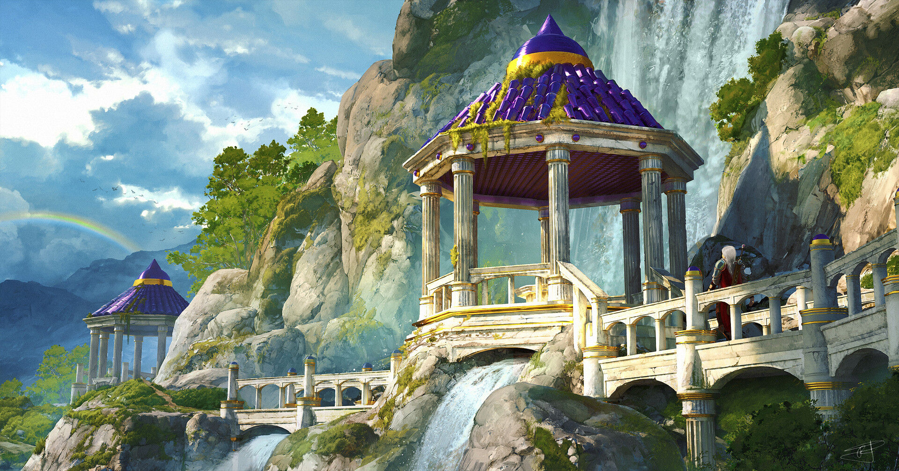
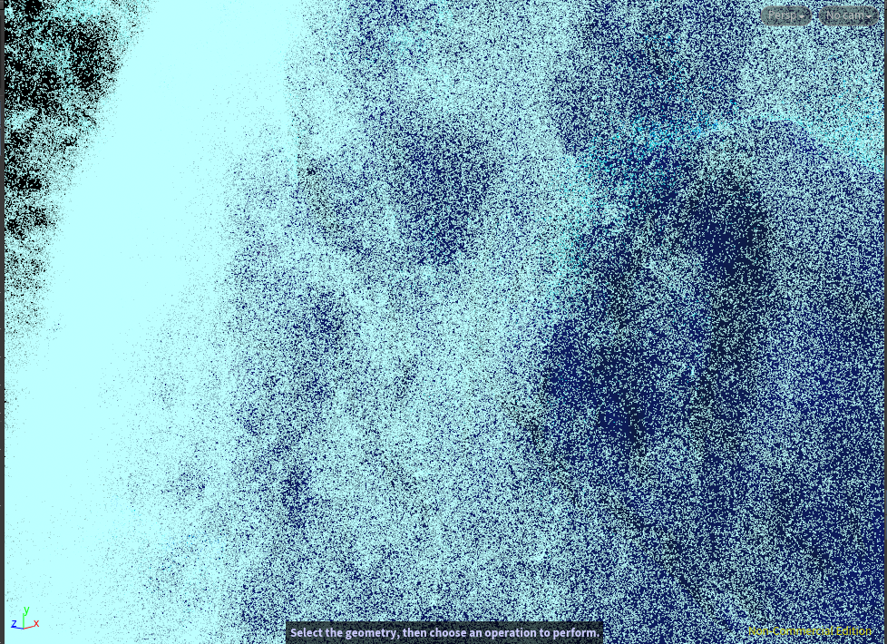
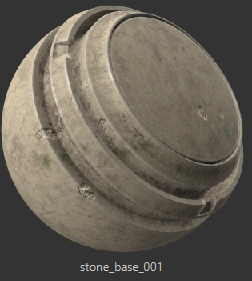

Undergraduate Capstone
In my final capstone project, I am undertaking the task of creating a captivating 3D environment inspired by the concept art of Max Suleimanov. This endeavor involves a meticulous process encompassing various software and techniques to bring the envisioned scene to life.To Start, I will employ Blender for the modeling and sculpting of the buildings.For the natural elements, such as cliffs and rocks, I plan to utilize Megascans within the Unreal Engine.To simulate the waterfall realistically, I will leverage the power of Houdini and its flip fluid tools.

Max Suleimanov, Pavilion (Reference Image)
Weekly Project Updates: week 1-2, January 19-26
 Most recent update for week 1-2
Most recent update for week 1-2
This week, I worked more on completing the buildings for the 3D environment. My goals for the end of this week are to finish the base structure of the building and begin sculpting the details, such as wear and tear and cracks. Furthermore, after talking to my mentor, he suggested that I use Megascans for the cliffs instead of modeling them from scratch. Additionally, he recommended creating a procedural system in Houdini that will generate cracks and damages on my building. I will be incorporating his suggestions into my project.
Weekly Project Updates: week 2-3, January 26 - February 2

 Most recent update for week 2-3
Most recent update for week 2-3
Throughout this week, I dedicated my efforts to crafting the cliff model that would serve as the centerpiece for the main waterfall. To achieve this, I merged various models from Megascans, seamlessly blending them to construct the terrain. I remeshed it and integrated it into Houdini, where it assumed the crucial role of simulating collisions for the main waterfall.In addition to this, I also worked on the collisions for the two smaller waterfalls. Guided by valuable input from my mentor, I embraced the innovative idea of using trim sheets to texture repeating materials across the mesh. I am eagerly looking forward to incorporating these trim sheets into my work in the coming week.
Weekly Project Updates: week 3-4, February 2 - February 9
This week, I've been working on creating the trimsheet for texturing purposes. To develop the trimsheet, I had to first block in the sections I want to create. Each section represents different materials that I will use to texture each model. I've organized four sections for four different materials, specifically two for marble textures—one with more cracks than the other—and two for gold textures, with one of the gold sections featuring more rust and damage than the other. I've already sculpted the two marble models, and my plan is to also sculpt the gold sections. Once I finish sculpting all the sections, the next step is to bake the 3D model into a 2D image. This image will then be sent to either Substance Painter or Photoshop to add the base color. This detailed process ensures that the trimsheet becomes a crucial element in enhancing the overall aesthetics and realism of the final 3D models.


Most recent update for week 3-4, the Left is the Reference Image and the Right is the 3D model
Next, I exported my cliff into Houdini to serve as the collision for my waterfall. Once imported, I converted it into a VDB (Voxel Data Base). After the conversion, I could seamlessly integrate it into my simulation to influence the particles. Creating the simulation was relatively straightforward for me due to my experience with water FX. I added an emitter and incorporated a noise displacement that animated over time. Utilizing the shelf tools available in Houdini, I laid the groundwork for the simulation. I introduced velocity, rest, and noise to enhance realism. Additionally, I implemented kill areas to prompt particle deletion upon contact with those designated regions. Upon completion, my mentor acknowledged the quality of my simulation. However, he recommended adding more elements to break up the waterfall further.
.png)
.png)
Right: Simulation Setup, Left: Collison and Kill boxes Setup
Waterfall Simulation
Weekly Project Updates: week 4-5, February 9 - February 16
This week, I dedicated my efforts to enhancing the visual appeal of my cliff, prompted by constructive feedback from my mentor. The specific concern was regarding the integration of rocks into the main body of the cliff, which appeared out of place and lacked structural coherence. After addressing these issues, I reimported the modified cliff into Houdini, where it now serves as the new collision source for my waterfall simulation.
.png)
Right: Cliff Before, Left: Cliff After
In parallel, I worked on refining the materials for my trimsheet. To achieve this, I utilized a baking process that transferred details from my high-poly mesh onto a low-poly plane of comparable size. For easier material application in each section, I introduced a vertex color for effective masking. The resulting textures, exported in 4K resolution, were seamlessly integrated into one of the objects that I had previously UV-wrapped.

Weekly Project Updates: week 4-5, February 16 - February 23
Shifting my focus to the simulation aspect, I made subtle adjustments to the flip fluid, particularly fine-tuning the particle separation and voxel scale. At present, I am in the process of caching the simulation at a lower resolution (particle separation: 0.06) to better understand the visual dynamics of the waterfall. This preliminary step allows me to make informed decisions before committing to a high-resolution simulation (particle separation: 0.03). Following my mentor's advice, I am cautious in caching only a few frames initially to ensure a smooth import of the simulation from Houdini into Unreal. Looking ahead to my 50% milestone, my overarching goal is to present a concise yet impactful snippet of my waterfall within the Unreal environment. Additionally, I aim to have completed the texturing for the majority of my scene, marking a significant achievement in the overall development of the project.

This week, my primary focus was on the integration of the environment I meticulously crafted in Blender into Unreal Engine. My mentor suggested that I revisit my trimsheet, prompting me to defer the addition of materials to my meshes until the trimsheet is refined. I undertook the task of grouping various components of my models together and subsequently importing them into Unreal Engine. However, I encountered a challenge where certain meshes appeared translucent, necessitating attention in the near future to rectify this issue.
Additionally, I successfully imported the Megascans assets of cliffs and rocks from Bridge into Unreal Engine. To ensure alignment with my reference, I meticulously set up a camera to match the desired perspective.
The waterfall posed the most intricate challenges, particularly in the realms of caching and importing. The caching process proved time-consuming, requiring several hours to complete the simulation with a particle separation of 0.03. To expedite the simulation, I adjusted the particle separation to 0.06. The entire caching procedure, encompassing both particles and surfaces, consumed approximately 8 hours. Subsequently, my plan was to cache the simulation into an Alembic file for seamless transfer to Unreal Engine. However, a limitation arose, as I realized I could only execute this process on the school's computer due to the Apprentice version limitations on my personal system.
In light of this obstacle, I opted for an alternative approach to create the waterfall effect. I applied a waterfall texture to a plane and orchestrated an animation loop, simulating the movement of the texture downward to convey the illusion of a cascading waterfall. Despite this workaround, the result appeared somewhat flat and lacked realism. Consequently, I am determined to persist with the original plan of using Houdini for creating the waterfall, recognizing its superior potential for achieving a more lifelike representation.
Weekly Project Updates: week 5-6, February 23 - March 1
This week, I dedicated a significant portion of my time to the intricate process of exporting my waterfall into Unreal Engine. After careful consideration, I settled on a final particle separation value of 0.065, deeming it the most optimized choice for a seamless import. Breaking down the waterfall into two components, I specifically cached the water mesh as an Alembic file. The initial file size exceeded 32 gigabytes, presenting a challenge that required meticulous optimization.
To tackle the size issue, I diligently removed unnecessary attributes and fine-tuned the adaptivity settings in my particle fluid surface. This strategic approach significantly reduced the file size to a more manageable 16 gigabytes, meeting my requirements. Upon successful import into Unreal, a process that took approximately 10 minutes, I integrated a water material. Upon pressing play, the waterfall ran relatively smoothly, although I noted some minor glitches that will require attention in subsequent refinements.
Shifting my focus to the whitewater aspect, my plan involved caching particles in Houdini using the Niagara particle cache. However, this phase encountered several hurdles. The cached file size initially surpassed Unreal's limitations, prompting a meticulous reduction by deleting extraneous attributes. Despite this, I encountered another challenge during the integration of the Niagara file into Unreal. The necessity for a plugin added an extra layer of complexity, exacerbated by compatibility issues with the Unreal version (5.2.1) I was using. Eventually, after experimenting with different plugins, I found a suitable match, allowing successful integration. Yet, a persisting issue emerged – the particles failed to display in Unreal, a dilemma I am actively troubleshooting.
Simultaneously, amidst the waterfall development, I am concurrently refining my textures and trimsheet. This dual focus aims to ensure comprehensive progress across all elements of the project, fostering a cohesive and polished outcome by the end of the week.
Weekly Project Updates: week 6-7, March 1 - March 8
This week, I continued my journey of figuring out how to export my whitewater into Unreal, which has been very challenging for me. I re-cached my flip fluid surface, remeshed each frame of the surface, and lowered the poly count to ensure that the Alembic file was much smaller than it was previously. I also added a color ramp to the mesh, with the color ramp being affected by the vorticity of the mesh. The goal is to use this as a mask, allowing me to apply a whitewater material in Unreal to the parts that are not affected. However, when I did this, the velocity mask wasn't showing.
Furthermore, I was fortunate to acquire another mentor named Victor Reguera, a VFX artist who utilizes Houdini and Unreal for his projects. During our discussion about my capstone, he demonstrated how he created a river in Houdini and the method he used to generate the mask for the whitewater material. He also reviewed the whitewater I created in Houdini and expressed his appreciation for it. He suggested converting the whitewater particles into spheres using a "copy to points" node because Unreal struggles with importing particles from other software. This involves caching the converted particles as another Alembic file and applying a translucent white material in Unreal. Additionally, I reached out to Michael Gyck for a Houdini license, and hopefully, in a few days, I will obtain the Education license to enable exporting various files on my computer.
In addition to these technical challenges, I continued working on creating my trimsheet. I decided to use Substance Designer instead of Blender due to the procedural aspect of the application, a choice that my mentor approved of for the same reason. I plan to finish it this coming week, with the ultimate goal of creating two trimsheets for my environment. So far, the process has been relatively straightforward.
trimsheet

trimsheet nodes
vorticity visualization
Weekly Project Updates: week 9-10, March 18 - March 22
This week, I've made significant strides in advancing my project. Collaborating closely with my mentor, we devised a novel approach to streamline and enhance the creation of my waterfall. Through experimentation and guidance, we crafted a more efficient and effective method that promises to elevate the quality of the final output.To begin, I delved into creating a mask for my flip fluid, leveraging the vorticity data inherent in the fluid dynamics. Utilizing the color node, I developed a system where the intensity of vorticity corresponds to the darkness of the mesh. This intricate mask serves a crucial role in assigning vertex colors within Unreal Engine, where white signifies a blue hue for the waterfall, while black translates to a white appearance.For the foundational aspect of the material, I integrated a pre-existing texture object into the framework. This texture object, with its RGB channels, offered a nuanced control over the distribution of foam across the surface. The red channel dictated minimal foam presence, whereas the blue channel indicated a profusion of foam, with the green channel providing a balanced middle ground.In addition to texture manipulation, I introduced a motion node into the mix. This dynamic element introduces subtle shifts and undulations to the texture, mimicking the fluid's natural movement. By imbuing the whitewater with this organic motion, the overall effect is heightened, evoking a sense of realism and dynamism.Yet, despite these advancements, I find myself at a crossroads regarding the inclusion of whitewater spheres. While they undoubtedly enhance the visual appeal, their impact on Unreal Engine's framerate cannot be overlooked. The heaviness of these elements significantly taxes system resources, potentially compromising the overall performance. As such, I'm inclined to lean towards their exclusion from the final iteration of the project, prioritizing a smooth and seamless user experience.
.png)
.png)
Weekly Project Updates: week 10-11, March 22 - March 30
This week, I delved further into refining my waterfall creations. I expanded my repertoire by crafting two additional waterfalls, employing the same methodical process as I did with the initial one. Thankfully, with a more established workflow in place, the task proved notably smoother and swifter. Utilizing a vertex color mask driven by vorticity, I meticulously crafted both waterfalls before caching them as Alembic files and seamlessly integrating them into Unreal Engine. However, I encountered a minor hiccup when incorporating one of the waterfalls due to naming conventions, which required a brief moment of troubleshooting to resolve.
In tandem with this, I dedicated efforts to fine-tuning my whitewater material. Implementing adjustments such as color variations based on the color mask, I aim to achieve a heightened level of realism, especially concerning water behavior during periods of low vorticity. Moreover, I made the strategic decision to transition from real-time rendering to a final render of my environment due to persistent frame rate drops. Despite exhaustive optimization and compression efforts aimed at preserving detail, the performance bottleneck persisted, prompting the shift to Unreal Engine for rendering.
Transitioning focus, I redirected attention towards my buildings, which remain in need of texture application. This necessitates the creation of both low and high-poly versions of each structure. Delving into the intricacies of sculpting, I encountered challenges, particularly with remeshing objects, requiring a meticulous adjustment of voxel sizes to accommodate intricate detailing. Notwithstanding these hurdles, significant progress has been made, with multiple objects already sculpted and integrated into the scene.
My ongoing endeavors also extend to the realm of texturing, where I've achieved completion on three models. These textured models are poised for evaluation by my mentor, whose feedback will undoubtedly contribute to further refinements in pursuit of my artistic vision.
Weekly Project Updates: week 11-12, March 30 - April 5
Throughout this week, my central focus has revolved around enriching the textural elements of my environment, predominantly centered on stone and gold textures. Initially, I encountered a hurdle in crafting a convincing stone texture due to my limited expertise in material creation. However, undeterred by this challenge, I persisted. In my pursuit, I scoured online resources until I stumbled upon a texture that resonated with my vision. Leveraging its normal map, I injected subtle imperfections into my material, a crucial step in replicating the organic intricacies of natural stone surfaces. Furthermore, I meticulously integrated nuanced variations in color and dirt layers to enhance realism. To infuse life into the scene, I meticulously added touches of greenery along edges, simulating the presence of vegetation. Completing the illusion, I painstakingly introduced cracks and crevices to each object using alphas, meticulously adjusting height values for a lifelike appearance. Additionally, certain objects underwent sculpting to carve out detailed cracks and holes, later transferred onto low-poly models for added depth.
In contrast, creating the gold material proved relatively straightforward. Initially, its excessive shine clashed with the surrounding stone elements. To harmonize the textures, I artfully introduced weathering effects and fine-tuned roughness values, achieving a cohesive aesthetic. An oxidation effect further enhanced the material's authenticity.
Upon importing these meticulously crafted elements into Unreal Engine, I was gratified to witness their seamless integration. Though most objects seamlessly assimilated into the scene, a few necessitated minor adjustments for optimal cohesion. Presently, my focus is honed on refining the placement of roof tiles, a task facilitated by the development of a bespoke toolset for precise manipulation. Looking forward, I am determined to complete the roof tiles, elevate the realism of the waterfall material, and meticulously fine-tune the lighting to elevate the scene's immersive quality.

Weekly Project Updates: week 13-15 , April 5 - April 27
For the past three weeks, I have been doing my due diligence on this project. The first thing I did was update my big waterfall. I wanted to add layering to it to make it fuller and have the rock show less. I created three waterfalls, each with different velocities. I increased the particle separation to add more particles and give it more volume and surface. Each waterfall was remeshed to a low poly count to better suit being exported to Unreal. I also slightly increased the opacity for my material. When I did test renders, I realized there were some weird artifacts in my renders that looked like black cubes. After doing some research, I realized it was because of the bloom settings causing the artifacts. After disabling it, I had no more problems with rendering. I also redid my roof for the structures. I decided to add more details to each tile by adding cracks to some of the tiles and adding dirt and foliage. I added small particles to the waterfall. I created these particles with Unreal's built-in Niagara particle system. I also added noise to the particles so that each particle moved differently. Furthermore, I made all the foliage simulate being blown in the wind. It was pretty simple; the effect is built into Unreal. Now, onto the lighting. I wanted to use Unreal's real-time render engine Lumen. I used a sunset HDRI to light up the scene instead of the default sky box that Unreal provides. The results were fine, but I still need to do some tweaking. Moreover, I also did some test rendering with Unreal's path tracing, which is similar to ray tracing but a bit more efficient. When the final render is done, I will do some color grading in Premiere Pro.